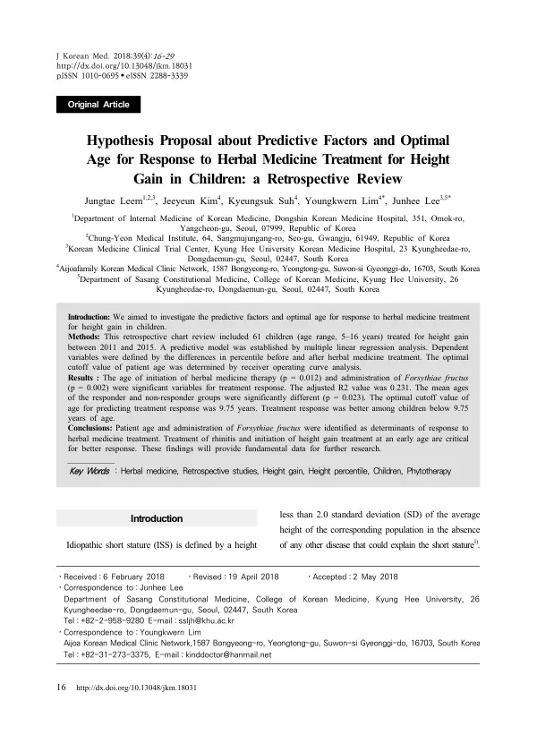

Hypothesis Proposal about Predictive Factors and Optimal Age for Response to Herbal Medicine Treatment for Height Gain in Children: a Retrospective Review
Leem J, Kim J, Suh K, Lim Y, Lee J
Journal of Korean Medicine 39(4):16-29

첫 장 · 오픈액세스First page · open access
논문 소개Summary
키가 작은 아이에게 한약을 쓸 때 임상의가 가장 자주 받는 물음은 언제 시작해야 하느냐입니다. 그런데 누가 잘 반응하는지, 언제 시작하는 것이 나은지를 자료로 따져 본 연구가 없었습니다. 이 논문은 한 한의원 네트워크의 진료기록을 후향적으로 검토해 그 물음에 가설을 세워 본 것입니다.
2011년부터 2015년까지 성장을 목적으로 한약 치료를 받은 5세에서 16세 아동 61명이 대상입니다. 치료 전후의 키 백분위수 차이를 종속변수로 삼아 다중선형회귀로 예측 모형을 세우고, 반응 여부를 가르는 나이의 최적 절단값은 수신자조작특성 곡선 분석으로 구했습니다.
치료 반응에 유의한 변수는 두 가지였습니다. 한약을 시작한 나이와 연교의 투여 여부입니다. 반응군과 비반응군의 평균 나이는 유의하게 달랐고, 반응을 예측하는 나이의 최적 절단값은 9.75세였습니다. 9.75세보다 어릴 때 시작한 아이들의 반응이 더 좋았습니다. 연교가 비염 치료에 쓰이는 약재라는 점에서, 저자들은 비염을 함께 다스리는 것과 이른 나이에 시작하는 것이 더 나은 반응에 중요하다고 보았습니다.
모형이 설명하는 몫은 크지 않습니다. 조정 결정계수가 0.231이었으므로 키 백분위수 변화의 대부분은 이 모형 밖에 있습니다. 저자들도 예측력이 상대적으로 낮으며 반응 차이를 설명할 다른 변수를 놓쳤을 수 있다고 적었습니다.
한계는 더 있습니다. 출생 시 키와 체중, 아토피 질환 유무를 예측인자로 조사하지 못했고, 추적 골연령 자료가 없어 예상 성인키나 연간 성장속도 대신 백분위수 차이를 썼습니다. 표본이 적어 남아와 여아의 절단값을 따로 구하지 못했고, 음성으로 나온 결과들은 2종 오류의 가능성을 고려해 조심스럽게 읽어야 합니다. 특정 처방이나 약재를 정해 두지 않아 어느 처방의 효과인지도 가릴 수 없습니다. 제목에 「가설 제안」이라고 붙인 것이 이 연구의 성격입니다.
The question clinicians most often face when prescribing herbal medicine to a short child is when to begin. Yet no study had examined from data who responds and when starting is better. This paper reviewed the records of one clinic network retrospectively to frame a hypothesis about that question.
Sixty-one children aged 5 to 16 treated for height gain between 2011 and 2015 were included. The difference in height percentile before and after treatment served as the dependent variable in a multiple linear regression predictive model, and the optimal age cutoff separating responders was derived by receiver operating characteristic analysis.
Two variables were significant for treatment response: the age at which herbal treatment began, and administration of Forsythiae fructus. Mean ages differed significantly between responder and non-responder groups, and the optimal cutoff for predicting response was 9.75 years, with better response among children who started younger. Since Forsythiae fructus is used for rhinitis, the authors read this as indicating that treating rhinitis alongside, and beginning at an early age, matter for better response.
The model explains only a modest share. With an adjusted R² of 0.231, most of the variation in height percentile change lies outside it — and the authors note that the predictive power is relatively low and that other variables explaining the difference in response may have been missed.
Further limitations follow. Birth height and weight and the presence of atopic disease were not investigated as predictors; without follow-up bone age data, the difference in height percentile was used rather than expected adult height or growth velocity. The small sample prevented separate cutoffs for boys and girls, and the negative findings should be read cautiously given the possibility of type II error. Because no specific prescription or herb was targeted, the effect of any particular formula cannot be identified. The phrase "hypothesis proposal" in the title states what this study is.
인용Cite
Leem J, Kim J, Suh K, Lim Y, Lee J. Hypothesis Proposal about Predictive Factors and Optimal Age for Response to Herbal Medicine Treatment for Height Gain in Children: a Retrospective Review. Journal of Korean Medicine. 2018;39(4):16-29. doi:10.13048/jkm.18031